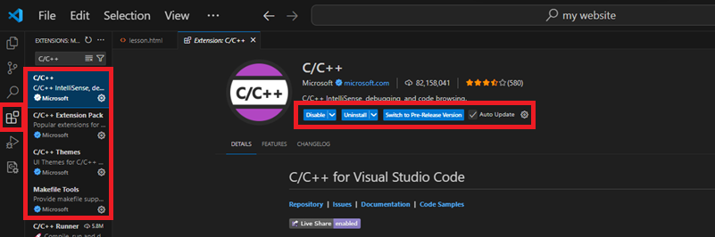
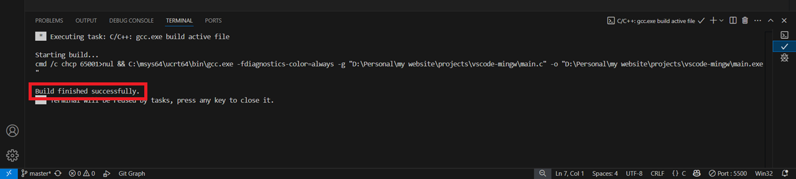

Visual Studio Code Setup with MinGW
In this lesson, you will learn what Visual Studio Code and code editors are, how to setup Visual Studio Code, how to setup MinGW and how to run your first lines of code. Let's get started!
What is a Code Editor
Code editors are tools that help you write code faster and better. They make your code easier to read by adding colors, indentation, and other helpful formatting. Some of the most common code editors are Visual Studio, Notepad++ and Visual Studio Code (VSCode) which is the one we will be using. It is super customizable, takes the least amount of storage space, has countless extensions, a built in terminal and works on any system.
What is MinGW
Minimalist GNU for Windows (MinGW) is a tool that lets you use C and C++ compilers on Windows. These compilers take the programs you write in C or C++ and turn them into real .exe files that can run on your computer. Bascially, a compiler translates your code into machine code (or binary) that your computer can understand and excecute. Without one, you wouldn't be able to turn your code into a working program.
Downloading Visual Studio Code
The first step is to download the Visual Studio Code installer. MinGW is a tool that only works one Windows, so if you are on a different operating system, you may have to find another compiler. Once the installer is finished downloading, save it and launch it.
When the installer opens, accept the licensing agreement and continue. On the next page, you will see a list of installation options. It is recomended to select them all, but you can pcik and choose which ones you want, except for Add to PATH which is REQUIRED. Then click "Next", click "Install", and wait for VSCode to finish installing. When it has finished, launch VSCode.
Now, we are going to install some extensions that will help you write and run your code. On the left-hand side of the VSCode window, find the extensions tab (four small squares). Search for "C/C++"". You are looking for these four extensions, all published by Microsoft:
C/C++C/C++ Extension PackC/C++ ThemesMakefile Tools
Click on each extension, and when the page opens, click "Install."
We are now finished installing VSCode! However, right now it is just a code editor and it can't actually compile and run programs yet. To do that, we need to install the MinGW toolchain, which gives us the gcc, g++, and gdb compilers.
Using GCC with MinGW
The first step to setting up MinGW is to install the MinGW-w64 compiler toolchain, which compiles C/C++ code for us. We will do this using MSYS2, a Windows tool that not only installs MinGW for you, but also keeps it updated. You can download the latest version of the MSYS2 installer here or you can use this direct link to the installer.
Now before we continue, we need to check what type of system (32-bit or 64-bit) your device is using. This is important because installing the wrong type of MinGW will cause your compiler not to work. To check, open settings and go to System > About > Device Specifications > System Type.

Once the MSYS2 installer launches, click "Continue" to start the installation. When it finishes, launch the MSYS2 Terminal. Depending on your system type, use the corresponding terminal and command to install the toolchain:
// 64-bit systems -> use MSYS2 UCRT64 shell
pacman -S --needed base-devel mingw-w64-ucrt-x86_64-toolchain
// 32-bit systems -> use MSYS2 MinGW32 shell
pacman -S --needed base-devel mingw-w64-i686-toolchain
Press Enter to accept the default number of packages for the toolchain and then enter Y when you are asked to Proceed with instalation [Y/n]. The toolchain should begin to install and this whole process should take around take around 5 minutes.
Now that the toolchain is installed, we need to tell Visual Studio Code where to find it. We do this by adding its path to the system environment variables. Follow these steps:
- Open Settings and search for
Edit the system environment variables. - In the System Properties window, click "Environment Variables...".
- Under "User Variables", find and select Path, then click Edit.
- Click New and add the path:
C:\msys64\ucrt64\bin. - Click OK on all windows to save the changes.
Now, all we have left to do is test if the compiler is installed correctly. Open a Command Prompt or Powershell window and run the following commands:
gcc --version
g++ --version
If everything is set up correctly, you will see an output showing the version of gcc and g++ that were installed through MSYS2. For example:
gcc.exe (Rev2, Built by MSYS2 project) 14.2.0
Copyright (C) 2024 Free Software Foundation, Inc.
This is free software; see the source for copying conditions. There is NO
warranty; not even for MERCHANTABILITY or FITNESS FOR A PARTICULAR PURPOSE.
Running Our First Lines of Code
Now that we finally have our VSCode environment set up, we can start coding! The first thing you should always do before starting any coding project is to make a simple program that prints "Hello, World!" to the console. This helps confirm that everything is working correctly. In this case we will use C.
When you are ready, make a new main.c file and copy and paste the following code into it.
#include <stdio.h>
int main() {
printf("Hello, World!\n");
return 0;
}
Once you save the file, find the play button in the top right corner of VSCode. Click the dropdown arrow next to it and select Run C/C++ File.
When prompted, select C/C++ gcc.exe build and debug active file from the search bar dropdown at the top of the window. This will start the compile process.
After selecting is, your terminal will open and VSCode will run some compile scripts for you. You dont need to worry about any of them, just look for a message that says your build was successful.
 If it compiled correctly with no errors, return to the TERMINAL tab and you should see it printed the text: Hello, World!
Congratulations, you have just run your first program with VSCode!
If the console gives you multiple errors in code that should normally work, you might have made a mistake with the environment variables or installed the wrong version of MinGW for your system